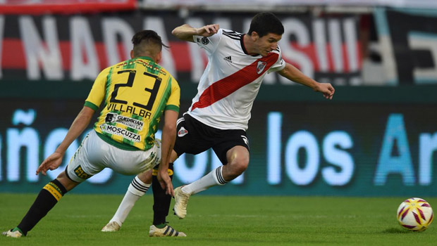

El equipo de Marcelo Gallardo se había puesto en ventaja y era superior en Mar del Plata, pero el local llegó al empate para el 1-1 final. La vuelta, el viernes que viene en el Monumental.
El Millonario se hizo dueño del partido desde el comienzo, con presión arriba y saliendo claro desde el fondo. Prácticamente no pasó sobresaltos y empezó a crear situaciones muy claras de gol. La primera fue en los pies de Rafael Borré, quien estuvo atento a un error defensivo local, pero su remate fue atajado por Luciano Pocrnjic.
Luego, Exequiel Palacios encontró al colombiano, pero el arquero local volvió a decir presente, al igual que en un tiro libre venenoso de Nacho Fernández que llegó a manotear en el segundo palo. Enzo Pérez también tuvo la suya con un disparo que le salió al medio del arco. La más clara de Aldosivi fue un desborde de Matías Pisano que Franco Armani respondió atento en el primer palo.
En el tramo final, Bruno Zuculini exigió a Pocrnjic desde fuera del área y Borré tuvo un cabezazo clarísimo tras centro de Fabrizio Angileri, pero se fue apenas desviado por el palo izquierdo rival. En la última, Pérez metió un cabezazo genial luego de una buena maniobra de Angileri y gritó el merecido 1-0 para River.
En el comienzo del segundo tiempo, Aldosivi generó la primera llegada de gol: Armani le tapó muy bien un cabezazo a Leonel Galeano. Sin embargo, River respondió con una aproximación de Nacho Fernández y un cabezazo de Javier Pinola al travesaño. En ese ida y vuelta, el arquero del Millonario volvió a aparecer para tapar una mediavuelta de Iván Colman.
Aldosivi llegó al empate por intermedio de Andrés Chávez, en una salida rápida desde el arco. Luego, Borré también tuvo una situación clara, con un desborde por derecha y cuyo centro atrás no encontró a ningún compañero. River lo buscó hasta el final, pero no logró quedarse con la victoria. Ahora, la llave se definirá el viernes que viene, por la noche, en el Estadio Monumental.
SÍNTESIS
ALDOSIVI: Luciano Pocrnjic (C); Emanuel Iñiguez, Jefferson Mena, Leonel Galeano,
Lucas Villalba; Ezequiel Videla, Dardo Miloc, Federico Gino; Matías Pisano, Cristian Chávez e
Iván Colman. DT: Gustavo Álvarez.
Suplentes: Fabián Assmann, Nahuel Yeri, Emiliano Amor, Fernando Godoy, Alan
Ruiz, Facundo Castillón y Franco Pérez.
Cambios: Castillón por Gino, Ruiz por Pisano, Amor por Videla.
RIVER PLATE: Franco Armani; Gonzalo Montiel, Lucas Martínez Quarta, Javier
Pinola (C), Fabrizio Angileri; Bruno Zuculini, Enzo Pérez, Ignacio Fernández, Exequiel Palacios;
Rafael Borré y Lucas Pratto. DT: Marcelo Gallardo.
Suplentes: Germán Lux, Robert Rojas, Camilo Mayada, Leonardo Ponzio, Nicolás De
La Cruz, Cristian Ferreira y Julián Álvarez.
Cambios: Álvarez por Pratto, De La Cruz por Palacios, Ferreira por Zuculini.
Goles: Chávez (A); Pérez (RP).
Amonestados: Fernández, Zuculini (RP).
Árbitro: Mauro Vigliano.
Asistentes: Cristian Navarro y Ariel Scime.
Cuarto árbitro: Facundo Tello.
· 28/04/2019
Gallardo: "No fuimos claros para seguir controlando
el juego"
· 26/04/2019
Los convocados para el debut en la Copa de la
Superliga
· 24/04/2019
River ganó en Chile y clasificó a octavos de
final
· 17/04/2019
Copa Argentina: River goleó en Salta y dio el
primer paso